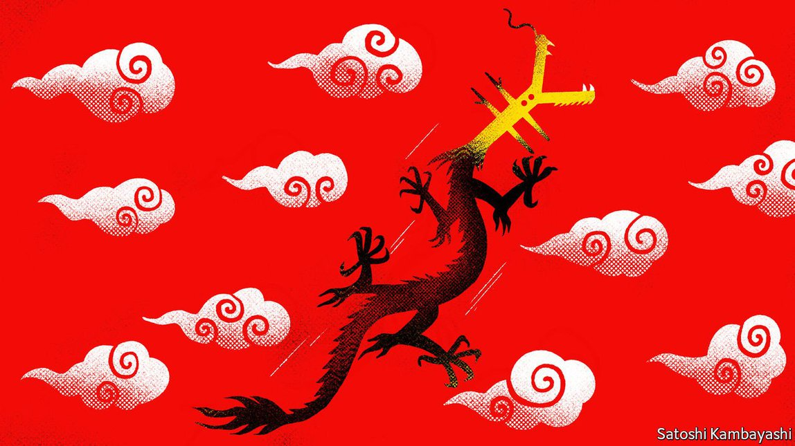
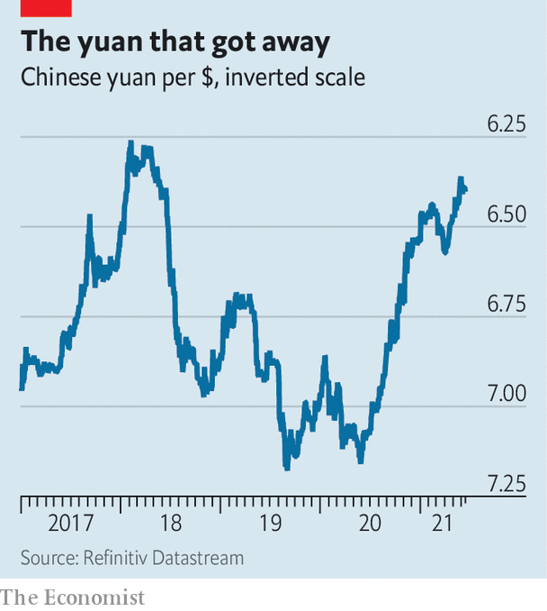
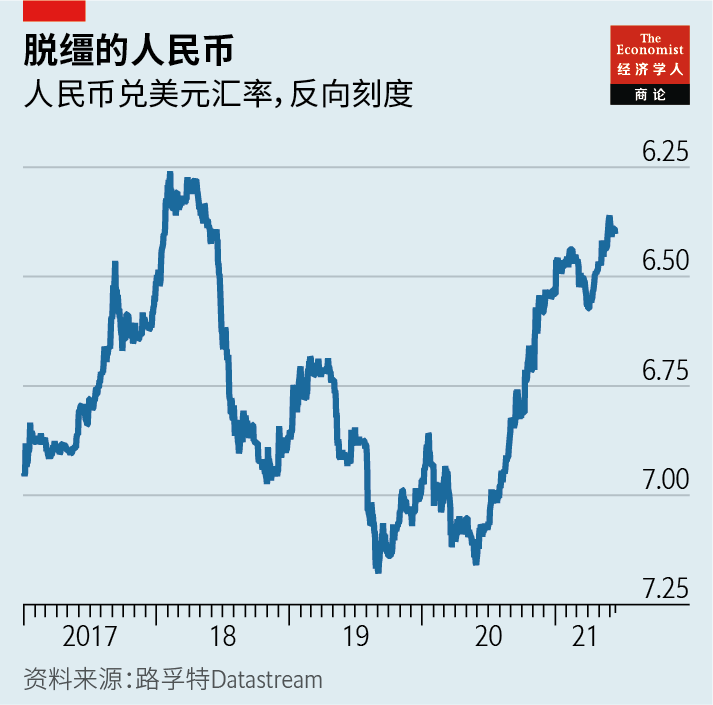

Text
2021-06-28T06:59:32+00:00
Buttonwood
梧桐
梧桐
Why China has learned to relax about its currency
中国为何开始放松对人民币的控制
中國為何開始放鬆對人民幣的控制
In a sign of tolerance, it has not slammed the door on capital inflows
中国没有阻止资本流入，显现出宽容度
中國沒有阻止資本流入，顯現出寬容度

IN A WORLD in which transparency has become a fetish, it is refreshing to try to get a read on the People’s Bank of China (PBOC). Its various nods and winks give market analysts something to interpret—or over-interpret. On May 31st it announced that it would increase the proportion of foreign-currency deposits that commercial banks must keep on reserve at the central bank, from 5% to 7%. After some chin-scratching, PBOC watchers came to a conclusion: China was sending a signal that the yuan had been rising a bit too quickly.
在如今这个极度崇尚透明度的世界里，试着解读中国人民银行的态度会让人精神一震。它的种种迂回暗示留给了市场分析师发挥的空间——或者是过度发挥。5月31日，人行宣布将商业银行的外汇存款准备金率由5%提高到7%。在一番挠头苦思后，人行观察人士得出了结论：中国正在发出人民币升值有点过快的信号。
在如今這個極度崇尚透明度的世界裡，試着解讀中國人民銀行的態度會讓人精神一震。它的種種迂迴暗示留給了市場分析師發揮的空間——或者是過度發揮。5月31日，人行宣布將商業銀行的外匯存款準備金率由5%提高到7%。在一番撓頭苦思後，人行觀察人士得出了結論：中國正在發出人民幣升值有點過快的信號。
China used to intervene directly—by buying and selling dollars—to get the exchange rate it wanted. As recently as 2016 it ran down its foreign-exchange reserves from $4trn to $3trn to support the yuan. But for the past four years or so its reserves have been stable; there has been no large-scale intervention to either put a floor under the yuan or to check its rise. The surprise is not that China has thrown a little sand in the gears of its currency market. It is that it has become so tolerant of some fairly big swings in the yuan’s value.
中国以往通过买入和卖出美元直接干预以达到汇率目标。还在2016年，为了支撑人民币汇率，它动用大量外汇储备，使余额从4万亿美元降至3万亿。但在过去四年左右的时间里，中国的外汇储备保持了稳定；它并没有做出大规模干预来为人民币汇率托底或抑制其升值。中国稍微干预一下自己的外汇市场并不令人惊讶，让人意外的是它对人民币汇率的大幅波动变得如此宽容。
中國以往通過買入和賣出美元直接干預以達到匯率目標。還在2016年，為了支撐人民幣匯率，它動用大量外匯儲備，使餘額從4萬億美元降至3萬億。但在過去四年左右的時間裡，中國的外匯儲備保持了穩定；它並沒有做出大規模干預來為人民幣匯率托底或抑制其升值。中國稍微干預一下自己的外匯市場並不令人驚訝，讓人意外的是它對人民幣匯率的大幅波動變得如此寬容。
The yuan began its recent ascent a year ago (see chart), as China’s factories reopened and demand for goods surged in the locked-down rich world. Chinese exporters took a greater share of world manufacturing, says Mansoor Mohi-uddin, of Bank of Singapore, which in turn increased the trade demand for yuan. Some headwinds became tailwinds. The yuan had traded at a discount to reflect fears of an escalation in the Sino-American trade wars. Exporters worried about a further hit to their revenues were inclined to hoard dollars—in part as security against their dollar debts. The prospect of Donald Trump’s electoral defeat changed the picture. The chances of further tariffs on Chinese goods were much reduced. Moreover, monetary conditions favoured speculative flows out of dollars and into yuan. In contrast to the Federal Reserve, the PBOC did not slash interest rates when the pandemic struck. The seven-day reverse-repo rate, one of China’s benchmarks, was trimmed by just 30 basis points to 2.2%, while the Fed funds rate was cut to 0.1%. The higher interest on offer in China’s money markets favoured its currency.
一年前，随着中国的工厂重启而还在封锁中的富裕国家对商品的需求激增，人民币开始了最近一轮升值（见图表）。新加坡银行的曼苏尔·莫希尤丁（Mansoor Mohi-uddin）表示，中国出口商在世界制造业中占据的份额增加，这反过来又增加了对人民币的交易需求。一部分不利因素也发生了逆转。此前，对中美贸易战升级的担心体现为人民币汇率出现折让。担心收入进一步受损的出口商倾向于囤积美元——一定程度上是为防范自身背负的美元计价债务风险。特朗普选举失利的前景扭转了这一局面。美国对中国商品进一步加征关税的可能性大大降低。此外，货币环境也有利于热钱从美元流向人民币。与美联储不同，人行在疫情爆发时没有大幅降息。中国基准利率之一的七天期逆回购利率仅下调30个基点至2.2%，而美国联邦基金利率下调至0.1%。中国货币市场上的较高利率也有利于人民币走强。
一年前，隨着中國的工廠重啟而還在封鎖中的富裕國家對商品的需求激增，人民幣開始了最近一輪升值（見圖表）。新加坡銀行的曼蘇爾·莫希尤丁（Mansoor Mohi-uddin）表示，中國出口商在世界製造業中佔據的份額增加，這反過來又增加了對人民幣的交易需求。一部分不利因素也發生了逆轉。此前，對中美貿易戰升級的擔心體現為人民幣匯率出現折讓。擔心收入進一步受損的出口商傾向於囤積美元——一定程度上是為防範自身背負的美元計價債務風險。特朗普選舉失利的前景扭轉了這一局面。美國對中國商品進一步加征關稅的可能性大大降低。此外，貨幣環境也有利於熱錢從美元流向人民幣。與美聯儲不同，人行在疫情爆發時沒有大幅降息。中國基準利率之一的七天期逆回購利率僅下調30個基點至2.2%，而美國聯邦基金利率下調至0.1%。中國貨幣市場上的較高利率也有利於人民幣走強。
That is not all. China has been opening its markets to overseas investors. Non-residents can more easily buy and sell stocks and bonds on the mainland’s markets. China’s government bonds and “A” shares have qualified for inclusion in global benchmarks, such as the MSCI equity indices and the Bloomberg Barclays bond index, which are tracked by huge pools of capital. A steady flow of foreign purchases has pushed up the yuan. China has not stood in the way. Tellingly on May 31st the PBOC picked a tool that does not interfere much with portfolio inflows.
这还不是全部。中国近来在向海外投资者开放市场。非中国居民现在可以更方便地在中国大陆市场买卖股票和债券。中国政府债券和A股被纳入了全球基准指数，例如被庞大资本池跟踪的MSCI股票指数和彭博巴克莱债券指数。外资持续买入也推高了人民币。中国并没有加以阻挠。5月31日，人行选择了一种不会过分干涉投资流入的政策工具，就很能说明问题。
這還不是全部。中國近來在向海外投資者開放市場。非中國居民現在可以更方便地在中國大陸市場買賣股票和債券。中國政府債券和A股被納入了全球基準指數，例如被龐大資本池跟蹤的MSCI股票指數和彭博巴克萊債券指數。外資持續買入也推高了人民幣。中國並沒有加以阻撓。5月31日，人行選擇了一種不會過分干涉投資流入的政策工具，就很能說明問題。
Still, there is a paradox. China has relaxed its hold on the yuan at a time when the ruling Communist Party has sought to exert greater control on private-sector businesses and on Chinese life in general. If China-watchers know anything, it is that control is prized in Beijing. Being in control does not mean that everything has to be nailed down, though. In the eternal trilemma between monetary autonomy, openness to capital and currency stability, something has to give. China has chosen to forgo a stable currency. That allows it greater traction over the domestic money supply and credit growth, which its regulators are more fretful about.
但还是有一个自相矛盾之处。中国放松了对人民币的管控，而与此同时执政的共产党正寻求加大对私营企业和中国人生活的总体控制。中国观察家很了解一点：北京极为看重这种控制。不过，掌控局面并不意味着要牢牢把控住所有事情。面对货币自主权、资本开放和汇率稳定这永恒的三难抉择，必须有所取舍。中国已经选择了放弃货币汇率稳定。这使得中国能更好地控制国内货币供应和信贷增长，而这些正是中国监管者更紧张的问题。
但還是有一個自相矛盾之處。中國放鬆了對人民幣的管控，而與此同時執政的共產黨正尋求加大對私營企業和中國人生活的總體控制。中國觀察家很了解一點：北京極為看重這種控制。不過，掌控局面並不意味着要牢牢把控住所有事情。面對貨幣自主權、資本開放和匯率穩定這永恆的三難抉擇，必須有所取捨。中國已經選擇了放棄貨幣匯率穩定。這使得中國能更好地控制國內貨幣供應和信貸增長，而這些正是中國監管者更緊張的問題。
China’s global ambitions for the yuan also influence its policy choices. It has the world’s second-largest bond market and third-largest stockmarket. Yet foreigners still own fairly few of its assets. Even central banks, which have had access to China’s bond markets for a while, keep only 2% of their reserves in yuan. That is barely more than they hold in the Canadian dollar. Four years ago there was a vigorous internal debate about the merits of freer capital flows, says Eswar Prasad of Cornell University. But for the past two years the consensus has shifted in favour of them. If the yuan is to be a global currency, it needs first to be set free.
中国对人民币全球地位的雄心也影响着其政策选择。中国拥有世界第二大债券市场和第三大股票市场。但由外国人持有的资产比例仍然极低。虽然几年前外国央行就已获准进入中国债券市场，但人民币也只占它们外汇储备的2%，仅略高于加元占比。康奈尔大学的埃斯瓦尔·普拉萨德（Eswar Prasad）说，四年前中国国内还在激烈争论放松资本流动的利弊，但在过去两年里，共识开始转向支持资本流动。如果人民币要成为一种全球货币，首先要让它获得自由。
中國對人民幣全球地位的雄心也影響着其政策選擇。中國擁有世界第二大債券市場和第三大股票市場。但由外國人持有的資產比例仍然極低。雖然幾年前外國央行就已獲准進入中國債券市場，但人民幣也只佔它們外匯儲備的2%，僅略高於加元佔比。康奈爾大學的埃斯瓦爾·普拉薩德（Eswar Prasad）說，四年前中國國內還在激烈爭論放鬆資本流動的利弊，但在過去兩年里，共識開始轉向支持資本流動。如果人民幣要成為一種全球貨幣，首先要讓它獲得自由。
Even so, no one is confusing the yuan with a free-floating currency. There are ways—including all that subtle central-bank semaphoring—for China to exert influence. It is still far from transparent about where its tolerance bands begin and end. Such ambiguity is wise: give the markets a number and they will test it. Perhaps surprisingly China has not stood in the way of a much stronger yuan. But its policymakers reserve the right to keep currency markets guessing.
即便如此，没有人会把人民币误认作一种自由浮动的货币。中国还有很多手段对汇率施加影响——包括央行惯用的各种微妙暗示。它所能容忍的浮动区间的上限和下限仍远谈不上清楚透明。这种模棱两可的策略是明智的：给市场某个数字，它们就会测试它。中国并没有出手阻止人民币大幅走强，这一点也许出人意料。但中国的政策制定者仍然留有后手，货币市场恐怕还需要继续揣摩其意图。
即便如此，沒有人會把人民幣誤認作一種自由浮動的貨幣。中國還有很多手段對匯率施加影響——包括央行慣用的各種微妙暗示。它所能容忍的浮動區間的上限和下限仍遠談不上清楚透明。這種模稜兩可的策略是明智的：給市場某個數字，它們就會測試它。中國並沒有出手阻止人民幣大幅走強，這一點也許出人意料。但中國的政策制定者仍然留有後手，貨幣市場恐怕還需要繼續揣摩其意圖。